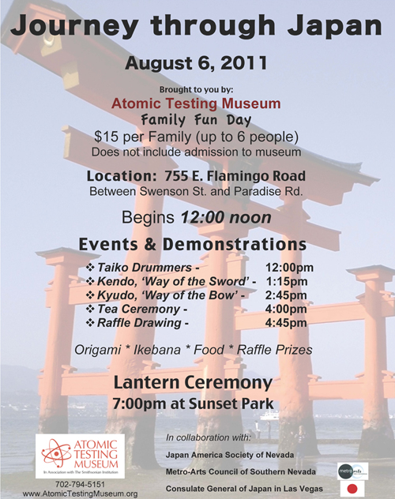
The Nevada Sangha would participate in this event sponsered by the Atomic Testing Museum. The ministers and Sangha would help people create lanterns in remembrance of those who lost there lives in Hiroshima, Nagasaki and to pray for the end of war and violence in the world.
The below pictures are of the making and creation of the lanterns for the floating ceremony to be held later that evening. Each individual writes prayers in remembrance of loved ones and peace. They draw and decorate the lanterns with beautiful pictures and designs.
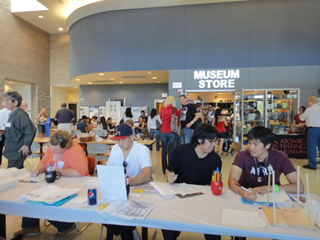
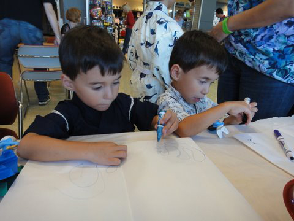
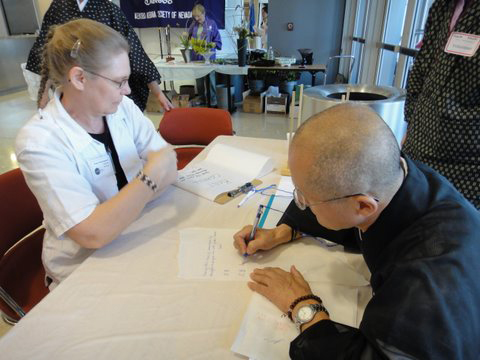
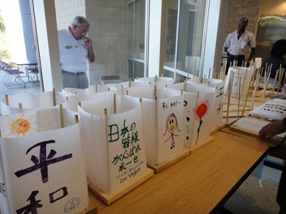
That evening they would take the Lanterns to Sunset Park where a service was held before launching the lanterns into the lake. As the sun sank in the sky, prayers where chanted from the Lotus Sutra.
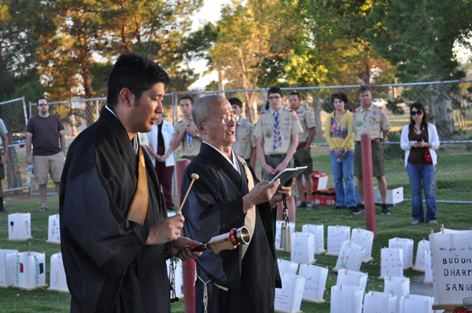
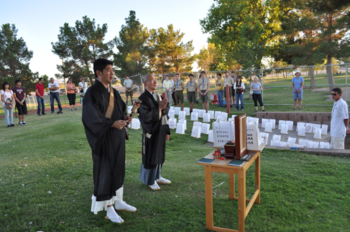
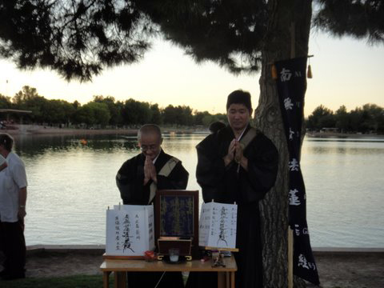
A local chapter of the Boy Scouts would help with the moving, arranging and launching of the lanterns.
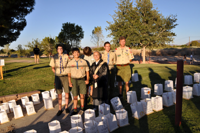
Below the Toro Lanterns are arranged before the service and launch.
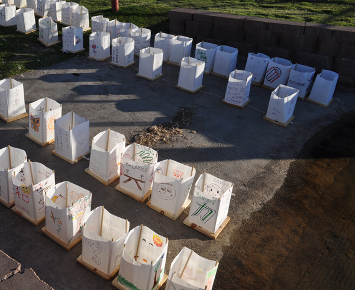
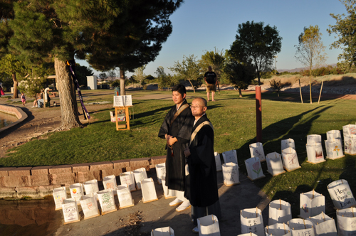
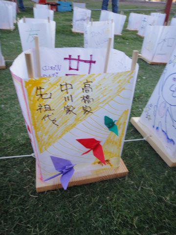
In tradition the lanterns would be let free into the lake but because of enviromental concerns the lanterns are collected after the floating. You can see above that the lanterns are strung together with string. This makes the collection easier after the ceremony. The shades will be collected and ceremonially creamated. The basis will be saved until next year when new shades are created.
Finally after prayers the lanterns are lit and launched into the still water of the lake.
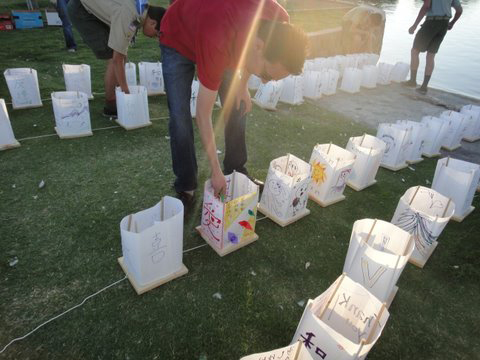
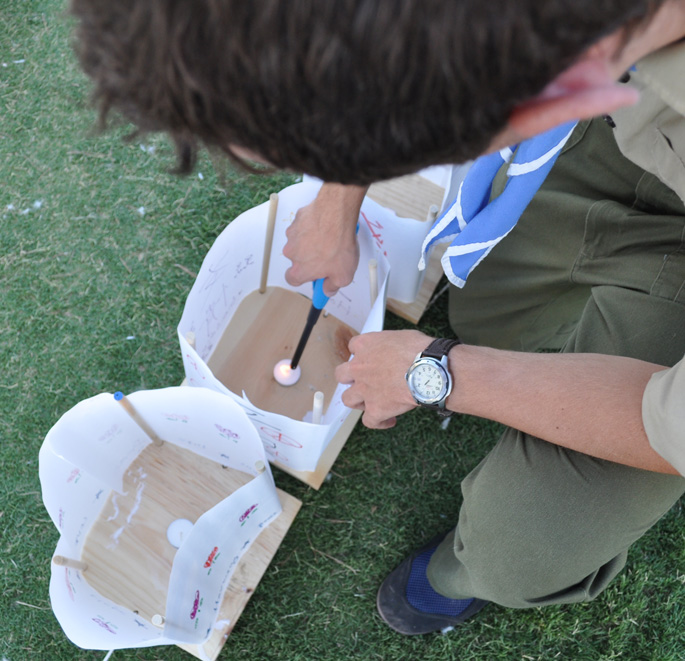
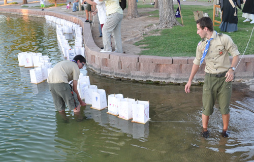
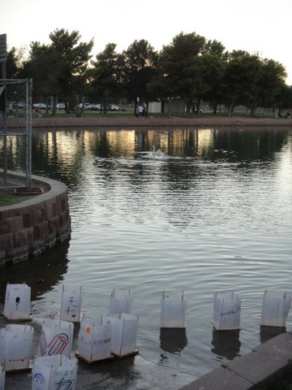
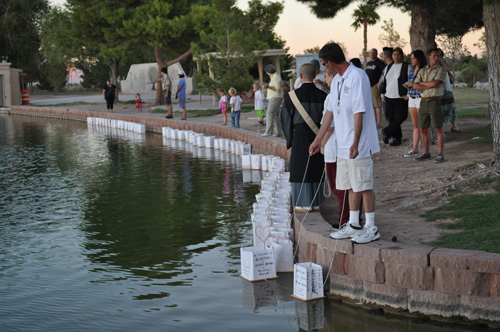
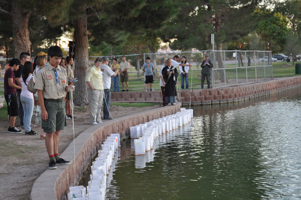
Don't wait till next year. Learn more by visiting our Temple.